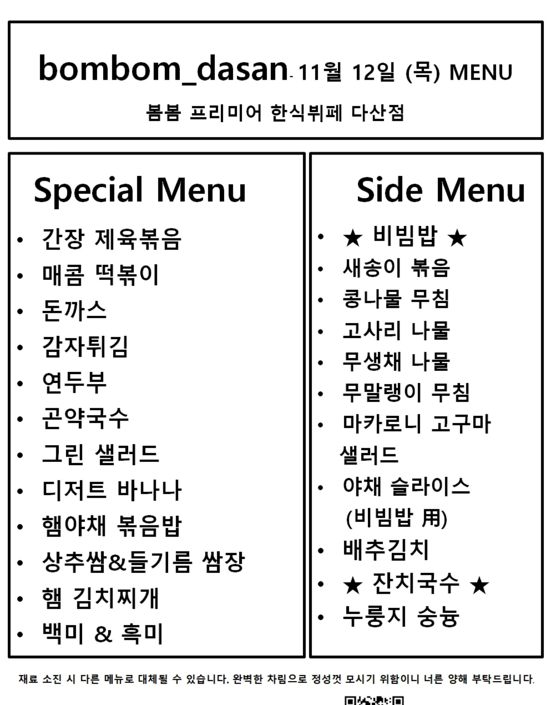
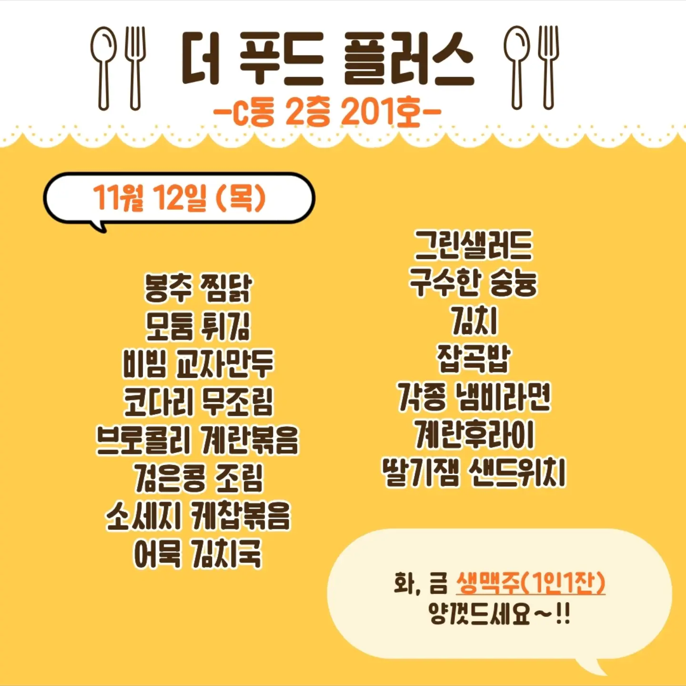

2026-11-12 오늘의 메뉴
아래 글자는 인식(OCR) 결과라서 오타가 있을 수 있습니다. 헷갈리면 위의 원본 이미지를 확인하세요.
봄봄 식당

- bombom_dasan 11월 12일 (목) MENU
- 봄봄 프리미어 한식부페 다산점
- Special Menu Side Menu
- 간장 제육볶음
- 매름 떡볶이 새송이 볶음
- 돈까스 콩나물 무침
- 감자튀김 고사리 나물
- 무생채 나물
- 연두부
- 곧약국수 마카로니 고구마
- 실러드
- 디저트 바나나 야채 슬라이스
- 햄야채 볶음밥
- 배추김치
- 햄 김치찌개 잔치국수
- 백미 & 혹미
- 재료 소진 시 다른 메뉴로 대체월 수 있습니다. 완벽한 차림으로 정성껏 모시기 위함이니 너른 양해 부탁드컵니다
더 푸드 플러스

- 더 푸드 플러스
- -C동 2층 201호-
- 11월 12일 (목)
- 그런실러드
- 통추 짐닭
- 비번 교자만두 잡곡밥
- 코다리 무조림 각종 냄라면
- 계란후라이
- -은콩 조림 딸기적 샌드위치
- 화; 금 생맥주(1인1잔)